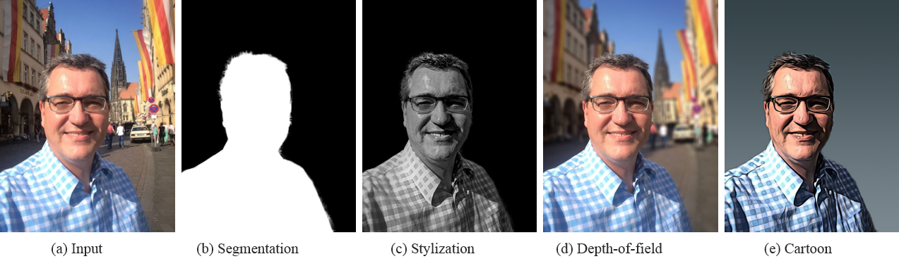
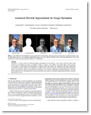

Xiaoyong Shen1 Aaron Hertzmann2 Jiaya Jia1 Sylvain Paris2 Brian Price2 Eli Shechtman2 Ian Sachs2
1The Chinese Univeristy of Hong Kong 2Adobe Research
|  |
Our highly accurate automatic portrait segmentation method allows many portrait processing tools to be fully automatic. (a) is the input image and (b) is our automatic segmentation result. (c-e) show different automatic image stylization applications based on the segmentation result. The image is from the Flickr user “Olaf Trubel”. |
Abstract
Portraiture is a major art form in both photography and painting. In most instances, artists seek to make the subject stand out from its surrounding, for instance, by making it brighter or sharper. In the digital world, similar effects can be achieved by processing a portrait image with photographic or painterly filters that adapt to the semantics of the image. While many successful user-guided methods exist to delineate the subject, fully automatic techniques are lacking and yield unsatisfactory results. Our paper first addresses this problem by introducing a new automatic segmentation algorithm dedicated to portraits. We then build upon this result and describe several portrait filters that exploit our automatic segmentation algorithm to generate high-quality portraits.
Media
This work was reoprted by Nvidia, PetaPixel, DIYPhotography, ITHome, etc.
Downloads
|  | "Automatic Portrait Segmentation for Image Stylization" Xiaoyong Shen, Aaron Hertzmann, Jiaya Jia, Sylvain Paris, Brian Price, Eli Shechtman, Ian Sachs. Computer Graphics Forum, 35(2)(Proc. Eurographics), 2016 [Data and Code (zip, 1.5GB)] Please download from Dropbox or Baiduyun. |
Last update: May. 25, 2016